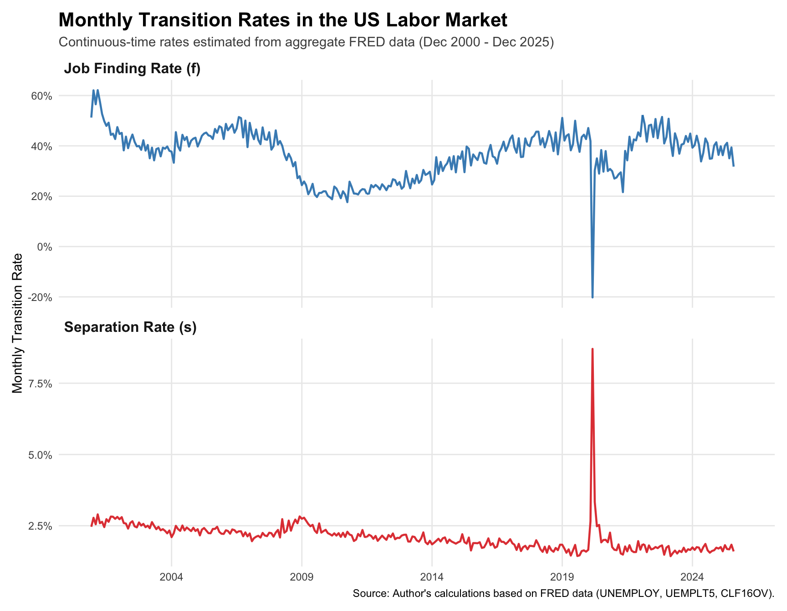
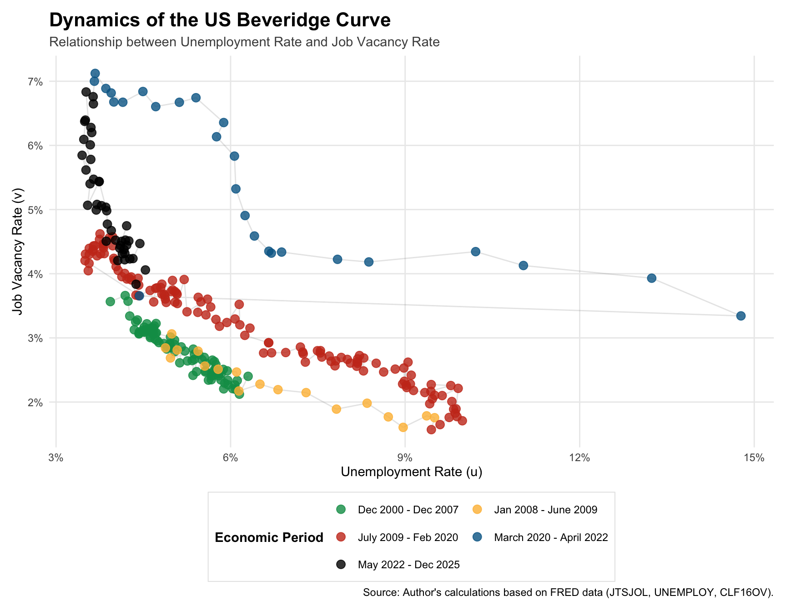

# Load necessary packages
library(tidyverse)
library(tidyquant)
library(lubridate)
# Set ggplot2 theme
theme_set(theme_minimal())
# Define output directory for plots
output_dir <- "/Users/stefanograziosi/Documents/GitHub/20285-macro-ps/ps2/output"
if (!dir.exists(output_dir)) dir.create(output_dir, recursive = TRUE)Macroeconomics Problem Set 2 - Exercise 3
Setup and Data Acquisition
First, let’s load the necessary R packages. We use tidyverse for data manipulation and visualization, and tidyquant to easily fetch macroeconomic data series directly from FRED.
Next, we download the required monthly series from FRED, covering the period from December 2000 through December 2025.
- \(V\):
JTSJOL(Job Openings: Total Nonfarm) - \(U\):
UNEMPLOY(Unemployment Level) - \(L\):
CLF16OV(Civilian Labor Force Level) - \(U^s\):
UEMPLT5(Number Unemployed for Less Than 5 Weeks)
# Define the start and end dates
start_date <- as.Date("2000-12-01")
end_date <- as.Date("2025-12-31")
# Define the tickers and their variable names for the exercise
tickers <- c(
"V" = "JTSJOL", # Job Openings
"U" = "UNEMPLOY", # Unemployment Level
"L" = "CLF16OV", # Civilian Labor Force Level
"Us" = "UEMPLT5" # Unemployed < 5 weeks
)
# Function to fetch data directly from FRED's CSV endpoint
fetch_fred_data <- function(ticker, name) {
url <- paste0("https://fred.stlouisfed.org/graph/fredgraph.csv?id=", ticker)
df <- readr::read_csv(url, show_col_types = FALSE) %>%
rename(date = observation_date, !!name := all_of(ticker)) %>%
# Ensure value column is numeric (FRED sometimes sends "." for missing)
mutate(across(all_of(name), as.numeric)) %>%
filter(date >= start_date & date <= end_date)
return(df)
}
# Fetch all series and join them together using purrr and dplyr
data <- map2(tickers, names(tickers), fetch_fred_data) %>%
reduce(full_join, by = "date") %>%
arrange(date)Part 1: Estimating Worker Flows
1.1 Summary of Shimer (2005) Methodology
In his seminal 2005 paper, Robert Shimer develops a methodology to estimate the continuous-time transition rates between employment and unemployment — the job-finding rate \(f_t\) and the separation rate \(s_t\) — from discrete-time monthly CPS data.
Core Identification Strategy. The key insight is that short-term unemployment (\(U^s_{t+1}\), those unemployed for fewer than 5 weeks at date \(t+1\)) identifies workers who entered unemployment during month \(t\). Workers remaining unemployed from month \(t\) to \(t+1\) who were already unemployed at \(t\) are those who failed to exit unemployment. Under the assumption that all short-term unemployed at \(t+1\) are new entrants during month \(t\), the monthly probability that an unemployed worker fails to find a job is: \[F^c_t \equiv \frac{U_{t+1} - U^s_{t+1}}{U_t}\] so the discrete (monthly) job-finding probability is \(F_t = 1 - F^c_t\). Assuming that, within each month, transitions follow a homogeneous Poisson process with constant hazard rates, the continuous-time job-finding rate is recovered via the mapping \(f_t = -\ln(1 - F_t)\).
Recovery of the Separation Rate. To recover \(s_t\), Shimer models the continuous-time evolution of unemployment within the month: \[ \dot{U}_{t+\tau} = s_t (L_t - U_{t+\tau}) - f_t\, U_{t+\tau}, \quad \tau \in [0,1) \] Holding \(L_t\), \(f_t\), and \(s_t\) constant during the month, this linear ODE has the closed-form solution: \[ U_{t+1} = \frac{s_t\, L_t}{f_t + s_t}\bigl(1 - e^{-(f_t + s_t)}\bigr) + e^{-(f_t + s_t)}\, U_t \] Since this equation is implicit in \(s_t\) (given \(f_t\), \(U_t\), \(U_{t+1}\), and \(L_t\)), it must be solved numerically — e.g., by root-finding.
Advantages:
- Relies on widely available aggregate CPS data rather than matched longitudinal records, which are susceptible to classification error and attrition.
- Explicitly corrects for time-aggregation bias, recovering hazard rates that more accurately reflect within-month transition dynamics.
Limitations:
- Assumes constant transition rates within each month (piecewise-constant hazards).
- Abstracts from the participation margin: all flows between employment/unemployment and out-of-the-labor-force (\(E \leftrightarrow N\), \(U \leftrightarrow N\)) are ignored, which can matter in recessions with discouraged-worker effects.
- Treats all short-term unemployed (\(<\) 5 weeks) as new entrants, which slightly overstates inflows when some are re-entrants from prior months’ short spells.
1.2 Probability of Finding a Job
Following Shimer’s method, we calculate the monthly probability of finding a job, \(F_t\) (or \(p^{UE}_t\)), and the corresponding continuous-time job-finding rate \(f_t\). We do this using data on the unemployment level (\(U_t\)) and short-term unemployment (\(U^s_t\)).
# Calculate job finding probability F_t and rate f_t
data <- data %>%
mutate(
# F_t requires U_{t+1} and Us_{t+1}. We shift U and Us backward to align
# the t+1 values on the t row. Note: lead(Us) is Us_{t+1}.
F_t = 1 - (lead(U) - lead(Us)) / U,
# Continuous-time job finding rate
f_t = -log(1 - F_t)
)1.3 The Separation Rate
Next, we compute the employment level \(E_t\) using data on the labor force \(L_t\) and the unemployment level \(U_t\) (\(E_t = L_t - U_t\)). With this information, along with the job finding rate \(f_t\), we can recover the separation rate \(s_t\) (or \(p^{EU}_t\)). Shimer incorporates the job-finding rate \(f_t\) in the computation of \(s_t\) precisely because of time-aggregation bias, which requires accounting for workers who separate from employment and find new jobs within the same month. Without this correction, the separation rate would be underestimated.
Time-Aggregation Bias. Time-aggregation bias arises because discrete monthly snapshots of unemployment fail to register transitions that begin and end within the same observation period. For example, if a worker loses her job on the 5th of the month and finds a new one on the 20th, neither the separation nor the subsequent hire will appear in the stock data at the month’s endpoints. As a result, naive transition-rate estimates that compare consecutive monthly stocks systematically understate the true volume of both separations and job findings. Shimer’s methodology corrects for this bias by modelling the within-month dynamics as a continuous-time Poisson process: (i) the monthly job-finding probability \(F_t\) is mapped to a continuous hazard rate \(f_t = -\ln(1 - F_t)\), and (ii) the separation rate \(s_t\) is recovered by integrating the continuous-time unemployment differential equation over \([t, t+1]\), thereby accounting for the multiple transitions that may occur within a single discrete period.
Because the equation for \(s_t\) is implicit, we can solve for it numerically month-by-month using a root-finding algorithm like uniroot.
# Function to solve for separation rate s_t implicitly
solve_s <- function(U_t, U_t_plus_1, L_t, f_t) {
# If any input is NA, return NA
if (is.na(U_t) || is.na(U_t_plus_1) || is.na(L_t) || is.na(f_t)) {
return(NA_real_)
}
# The objective function to find the root of (equation equals 0)
obj_fun <- function(s) {
U_t_plus_1 - ((1 - exp(-f_t - s)) * s * L_t / (f_t + s) + exp(-f_t - s) * U_t)
}
# Use uniroot to find s in a reasonable interval (e.g., 0.0001 to 0.5)
res <- tryCatch(
uniroot(obj_fun, interval = c(1e-6, 0.5))$root,
error = function(e) NA_real_ # Return NA if no root is found
)
return(res)
}
# Apply the solver to each row
data <- data %>%
mutate(
# Compute the employment level based on labor force and unemployment
E = L - U,
U_lead = lead(U),
# Calculate s_t row-wise
s_t = pmap_dbl(list(U, U_lead, L, f_t), solve_s)
) %>%
# Remove the temporary lead variable
select(-U_lead)1.4 Trends and Cyclicality of the Rates
Let’s visualize the estimated continuous-time transition rates over time.
# Reshape data to long format to plot both rates easily
plot_data <- data %>%
select(date, `Job Finding Rate (f)` = f_t, `Separation Rate (s)` = s_t) %>%
pivot_longer(cols = -date, names_to = "Rate_Type", values_to = "Rate")
# Plot
p1 <- ggplot(plot_data, aes(x = date, y = Rate, color = Rate_Type)) +
geom_line(linewidth = 0.8, alpha = 0.9) +
facet_wrap(~Rate_Type, scales = "free_y", ncol = 1) +
scale_y_continuous(labels = scales::label_percent()) +
scale_x_date(date_breaks = "5 years", date_labels = "%Y") +
scale_color_manual(values = c("Job Finding Rate (f)" = "#2c7fb8", "Separation Rate (s)" = "#de2d26")) +
labs(
title = "Monthly Transition Rates in the US Labor Market",
subtitle = "Continuous-time rates estimated from aggregate FRED data (Dec 2000 - Dec 2025)",
caption = "Source: Author's calculations based on FRED data (UNEMPLOY, UEMPLT5, CLF16OV).",
x = NULL,
y = "Monthly Transition Rate"
) +
theme_minimal(base_size = 11) +
theme(
legend.position = "none",
strip.text = element_text(face = "bold", size = 12, hjust = 0),
panel.grid.minor = element_blank(),
plot.title = element_text(face = "bold", size = 16),
plot.subtitle = element_text(color = "grey30"),
plot.margin = margin(10, 10, 10, 10)
)
print(p1)
# Save high-res PDF
ggsave(file.path(output_dir, "transition_rates.pdf"), plot = p1, width = 9, height = 7, device = "pdf")
# Save separate plots without titles/subtitles as requested
p_f <- ggplot(data, aes(x = date, y = f_t)) +
geom_line(linewidth = 0.8, color = "#2c7fb8", alpha = 0.9) +
scale_y_continuous(labels = scales::label_percent()) +
scale_x_date(date_breaks = "5 years", date_labels = "%Y") +
labs(x = NULL, y = "Job Finding Rate (f)") +
theme_minimal(base_size = 11) +
theme(panel.grid.minor = element_blank())
ggsave(file.path(output_dir, "job_finding_rate.pdf"), plot = p_f, width = 9, height = 4, device = "pdf")
p_s <- ggplot(data, aes(x = date, y = s_t)) +
geom_line(linewidth = 0.8, color = "#de2d26", alpha = 0.9) +
scale_y_continuous(labels = scales::label_percent()) +
scale_x_date(date_breaks = "5 years", date_labels = "%Y") +
labs(x = NULL, y = "Separation Rate (s)") +
theme_minimal(base_size = 11) +
theme(panel.grid.minor = element_blank())
ggsave(file.path(output_dir, "separation_rate.pdf"), plot = p_s, width = 9, height = 4, device = "pdf")Discussion:
Job-finding rate (\(f_t\)). The estimated job-finding rate is strongly procyclical and constitutes the dominant source of unemployment fluctuations over the business cycle. It declines sharply at the onset of each recession — falling by roughly 40–50% during the Great Recession — and recovers only gradually during the subsequent expansion, consistent with the well-documented sluggishness of labor-market recoveries. The COVID-19 shock produced the sharpest single-month drop on record, followed by an exceptionally rapid recovery that pushed \(f_t\) to historically elevated levels by mid-2022, reflecting the extraordinary tightness of the post-pandemic labor market.
Separation rate (\(s_t\)). The separation rate is countercyclical, exhibiting brief but intense spikes at the onset of recessions. The spike associated with the Great Recession was large but brief; the COVID-19 spike was an order of magnitude larger yet even shorter-lived. Outside of recessionary episodes, \(s_t\) fluctuates within a narrow band, displaying comparatively little variation. This pattern confirms a central finding of Shimer (2005): while separation-rate spikes initiate rises in unemployment, it is the persistent decline in the job-finding rate that sustains elevated unemployment throughout the downturn.
Overall assessment. The time-series evidence supports a decomposition in which separations act as a “trigger” mechanism while the job-finding rate governs the depth and duration of unemployment cycles. This is consistent with the subsequent literature debate (e.g., Elsby, Michaels, and Solon, 2009, who argue that separations play a somewhat larger role than Shimer initially suggested, particularly at the onset of downturns).
Part 2: The Beveridge Curve
2.1 Plotting the Beveridge Curve
The Beveridge Curve maps the inverse relationship between the unemployment rate (\(u\)) and the job vacancy rate (\(v\)). We first calculate these variables and segment the data into the requested distinct periods.
data <- data %>%
mutate(
# Labor market variables
u = U / L,
E = L * (1 - u), # Or simply L - U
v = V / (E + V),
# Scale to percentages for better readability on axes
u_pct = u * 100,
v_pct = v * 100,
# Categorize into historical periods
Period = case_when(
date >= as.Date("2000-12-01") & date <= as.Date("2007-12-31") ~ "Dec 2000 - Dec 2007",
date >= as.Date("2008-01-01") & date <= as.Date("2009-06-30") ~ "Jan 2008 - June 2009",
date >= as.Date("2009-07-01") & date <= as.Date("2020-02-29") ~ "July 2009 - Feb 2020",
date >= as.Date("2020-03-01") & date <= as.Date("2022-04-30") ~ "March 2020 - April 2022",
date >= as.Date("2022-05-01") & date <= as.Date("2025-12-31") ~ "May 2022 - Dec 2025",
TRUE ~ NA_character_
)
) %>%
filter(!is.na(Period)) # Drop rows outside defined periods
# Ensure chronological ordering in the legend
data$Period <- factor(data$Period, levels = c(
"Dec 2000 - Dec 2007",
"Jan 2008 - June 2009",
"July 2009 - Feb 2020",
"March 2020 - April 2022",
"May 2022 - Dec 2025"
))Now, we plot the Beveridge Curve for the respective periods. Note that the standard Beveridge curve is downward sloping. When the curve shifts outward (up and to the right), it implies a decrease in matching efficiency—a given level of vacancies is associated with higher unemployment.
# Map colors exactly as requested
period_colors <- c(
"Dec 2000 - Dec 2007" = "#009B55", # Green
"Jan 2008 - June 2009" = "#FDBC42", # Orange
"July 2009 - Feb 2020" = "#ca381e", # Red
"March 2020 - April 2022" = "#006795", # Blue
"May 2022 - Dec 2025" = "#000000" # Black
)
p2 <- ggplot(data, aes(x = u, y = v, color = Period)) +
geom_path(alpha = 0.2, color = "grey50", linewidth = 0.5) + # Trajectory line
geom_point(alpha = 0.8, size = 3) +
scale_x_continuous(labels = scales::label_percent(accuracy = 1)) +
scale_y_continuous(labels = scales::label_percent(accuracy = 1)) +
scale_color_manual(values = period_colors) +
labs(
title = "Dynamics of the US Beveridge Curve",
subtitle = "Relationship between Unemployment Rate and Job Vacancy Rate",
caption = "Source: Author's calculations based on FRED data (JTSJOL, UNEMPLOY, CLF16OV).",
x = "Unemployment Rate (u)",
y = "Job Vacancy Rate (v)",
color = "Economic Period"
) +
theme_minimal(base_size = 11) +
theme(
legend.position = "bottom",
legend.title = element_text(face = "bold"),
panel.grid.minor = element_blank(),
plot.title = element_text(face = "bold", size = 16),
plot.subtitle = element_text(color = "grey30"),
legend.box.background = element_rect(color = "grey90", fill = NA),
plot.margin = margin(10, 10, 10, 10)
) +
guides(color = guide_legend(nrow = 3, byrow = TRUE))
print(p2)
# Save high-res PDF
ggsave(file.path(output_dir, "beveridge_curve.pdf"), plot = p2, width = 9, height = 7, device = "pdf")Discussion:
Movements along the curve. Within structurally stable regimes — the pre-crisis expansion (green, 2000–2007) and the post-crisis recovery (red, 2009–2020) — the data trace out the canonical negative relationship predicted by the standard Beveridge curve. As the economy enters the Great Recession (orange, 2008–2009), declining aggregate demand simultaneously drives up unemployment and suppresses vacancy posting, producing a movement along a roughly stable locus toward the lower-right of the \((u, v)\) space.
Outward shifts and matching efficiency. A striking feature is the outward shift of the curve between the pre-crisis (green) and post-crisis recovery (red) regimes. During the early recovery (2009–2013), the red cluster sits markedly to the right of the green locus at comparable vacancy rates, indicative of a deterioration in aggregate matching efficiency. This is broadly consistent with explanations involving skill mismatch, geographic mismatch, and extended unemployment benefit durations that reduced search intensity during that episode.
COVID-19 pandemic and recovery (blue). The pandemic produced an unprecedented pattern. The initial shock (March–April 2020) generated an extreme spike in unemployment with a simultaneous collapse in vacancies. However, the recovery trajectory is dramatically different from any prior cycle: vacancies surged to historic highs while unemployment remained elevated, pushing the economy far to the upper-right of any previously observed Beveridge curve locus. This exceptional outward shift reflects a combination of sectoral reallocation shocks and the “Great Resignation” — an unprecedented wave of voluntary job-to-job transitions that generated massive vacancy posting aimed at replacing churning workers rather than expanding employment from the unemployment pool.
Monetary tightening and the “soft landing” (black). The most economically significant recent development is the trajectory of the black data points (May 2022 onward). As the Federal Reserve tightened monetary policy, the economy moved nearly vertically downward on the Beveridge curve: vacancies declined sharply from their historic peaks while the unemployment rate remained essentially flat. This near-vertical descent is highly unusual and stands in stark contrast to the standard prediction that reducing labor-market tightness requires a trade-off between lower vacancies and higher unemployment. As Barlevy et al. (2024) argue, this “immaculate disinflation” is explained by the fact that the elevated vacancies reflected reallocation churn rather than fundamental labor demand: as the Great Resignation subsided, firms withdrew replacement postings without resorting to layoffs.
2.2 Literature Discussion: Barlevy et al. (2024)
Barlevy et al. (2024) decompose Beveridge-curve shifts into two distinct channels: (i) changes in search efficiency — the rate at which unemployed workers and vacant jobs form matches, holding the stock of each fixed — and (ii) the intensity of reallocation shocks — the rate at which existing employment relationships dissolve, generating simultaneous inflows into both unemployment and vacancy posting.
Past recoveries. In the recoveries following the 2001 and 2007–09 recessions, Beveridge-curve shifts were primarily attributable to a decline in search efficiency. Long unemployment durations eroded human capital and weakened search effort, while geographic and sectoral mismatch between available workers and open positions reduced the matching rate. Extended unemployment insurance benefits may have further dampened search intensity. These factors caused unemployment to remain elevated even as vacancy posting recovered, producing the characteristic rightward shift of the curve.
The COVID-19 recovery and the “Great Resignation.” The post-pandemic shift was driven by a fundamentally different mechanism. Barlevy et al. demonstrate that the dominant force was a surge in reallocation intensity — specifically, an unprecedented rise in voluntary employer-to-employer (job-to-job) transitions, popularly termed the “Great Resignation.” As the economy reopened and labor demand surged, employed workers leveraged the tight market to pursue better wages, remote-work arrangements, and career changes. In a search-and-matching framework, this elevated churn requires firms to post a large number of vacancies merely to replace departing workers, even absent net employment growth. The vacancy-to-unemployment ratio therefore rose sharply, shifting the Beveridge curve upward. Crucially, these vacancies were not aimed at drawing from the unemployment pool, but at competing for already-employed workers.
Monetary tightening and the near-vertical decline. The framework directly explains the unusual near-vertical trajectory of the black data points. The classical concern (e.g., Blanchard, Domash, and Summers, 2022) was that restoring price stability would require a significant increase in unemployment — i.e., moving down a relatively flat Beveridge curve. Barlevy et al. show that this reasoning misidentifies the nature of the elevated vacancies. Because the pandemic-era vacancy surge was driven by reallocation churn rather than by fundamental excess demand for new hires, the tightening cycle merely unwound the churn: as quit rates normalized, firms withdrew replacement postings, and the vacancy rate fell rapidly. Since these vacancies had not been drawing workers from the unemployment pool in the first place, their disappearance did not generate layoffs or raise unemployment. The economy thus descended nearly vertically, achieving what commentators have termed an “immaculate disinflation” or “soft landing.”